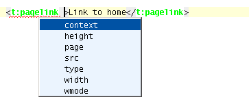
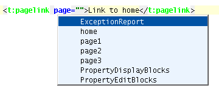
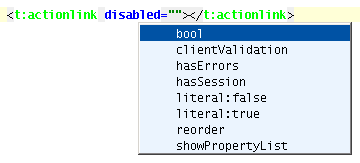
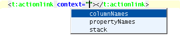
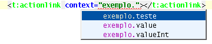

| Auto-Completion |
|
|
Auto-completion makes template editing much faster. Loomy extends this feature introducing lot's of Tapestry specific completions. This section covers the following features:
When editing your template you can take advantage of the auto-completion feature to help you insert a component using both types of possible annotations for that:
Component tags have additional parameters that don't conform to the HTML standard and so the default auto-completion won't help you. This plugin extends the auto-completion feature adding the Tapestry component parameters to the list of possible tag parameters. 
Auto-completion of property binding is available so you can save lot's of time navigating from template to class. Page parameter of the PageLink component:  Boolean parameters:  Simple properties:  Composed properties:  |